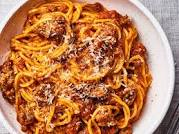

Spaghetti
Spaghetti

Classic Spaghetti
To make spaghetti you will need:
Ingredients
That's it!
Optional:
Reserve a little pasta water to add to your sauce!
Steps:
- Boil water, add salt and a little olive oil
- Add in your spaghetti noodles, cook until al dente
- Top with your sauce and meat of choice!
This always pairs well with a fresh salad or garlic bread!